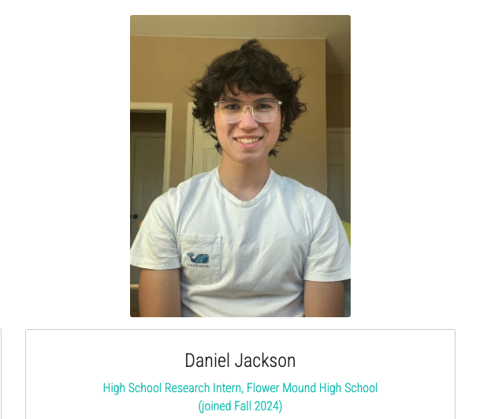
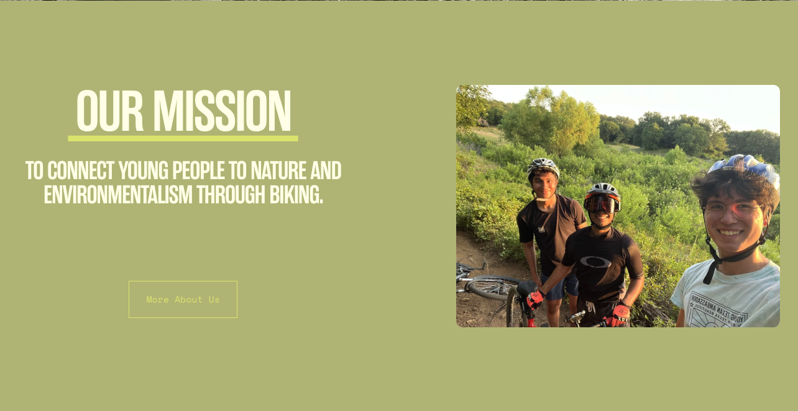
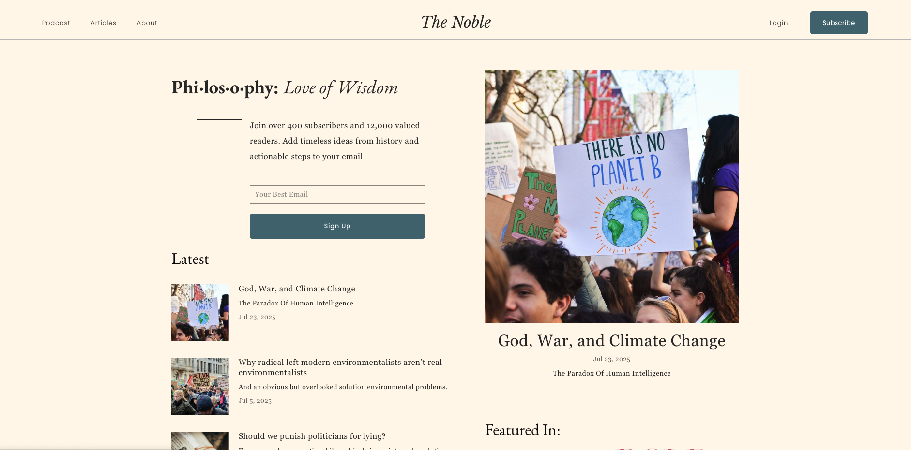

Daniel Jackson
Flower Mound High School, TX | Grade: 3.98
Present
Research Assistant @ Kim's ECL Group, UT Arlington
Kim's ECL Group
Environmental Chemistry Laboratory focused on microplastics and PFAS research in marine ecosystems.
Location: University of Texas at Arlington
Website: kimecl.com
Founder & Chapter President @ The EcoBike Club
The EcoBike Club
Environmental initiative combining cycling with community cleanup efforts to combat waste disposal issues.
Location: Dallas, TX
Website: ecobikeclub.org
Founder & Editor-in-Chief @ The Noble
The Noble
Online newspaper covering philosophy, environmentalism, ethics, and conservation with 12,000+ views.
Location: Flower Mound, TX
Website: bethenoble.com
Previous
Exemplary Essay Award Winner @ Character.org
Character.org
National organization promoting character education and ethical development in schools and communities.
Location: Washington, DC
Website: character.org
Keep Texas Beautiful Scholarship Recipient
UIL Ready Writing Essay Award Winner
Feel free to reach out at jackson.danieljay@gmail.com